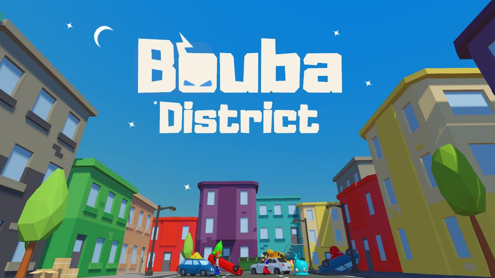
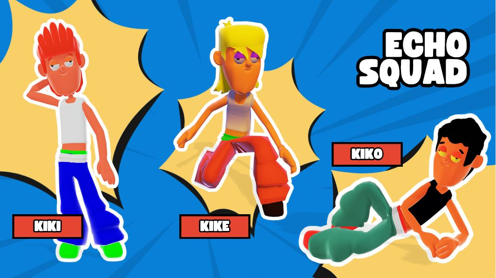
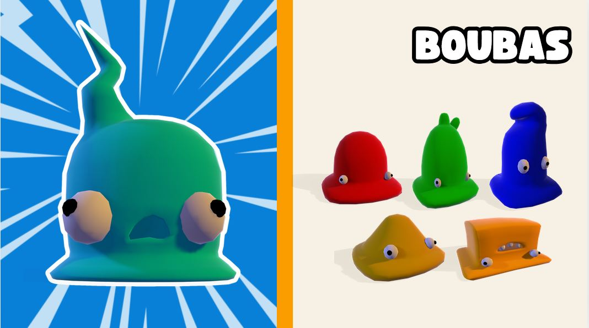

Juego musical competitivo
combina mecánicas que mezclan acción y ritmo
INTRODUCCIÓN
Bouba District es un juego competitivo musical multiplataforma que combina mecánicas que mezclan acción y ritmo. El jugador deberá enfrentarse a hordas de criaturas adorables pero peligrosas, que se acercan en masa para atacarlo.
La clave para defenderse será seguir el ritmo de la música e ingresar secuencias de teclas correctas dentro del tiempo indicado. El estilo principal del juego es una combinación de tower defense y juegos de ritmo.
MECÁNICAS
Las mecánicas principales de Bouba District se centran en la combinación de acción y ritmo.
| Ritmo y secuencia de teclas | El jugador deberá pulsar las teclas correctas o tocar los botones en pantalla en sintonía con la música. Las secuencias variarán en dificultad según el nivel. |
| Defensa | Pulsar las teclas correctas provocará que los enemigos se unan al jugador y le darán más vida. El jugador tendrá que aguantar el mayor tiempo posible, consiguiendo la mayor puntuación o hasta que termine la canción, si se trata de un nivel de duración determinada (en el caso de canciones conocidas). |
| Puntuación | La puntuación incrementa cuando se matan Boubas. Cuantas más teclas correctas consecutivas se consigan pulsar, más puntos sumarás. También se tendrá en cuenta la vida final del jugador o el tiempo total que ha sobrevivido (dependiendo del tipo de nivel). Esta puntuación se llevará a un ranking global para fomentar el aspecto competitivo y la rejugabilidad. |
CONTROLES
Los controles de Bouba District están diseñados para ser accesibles, simples y precisos.
| En dispositivos móviles y tablets | El jugador cuenta con cuatro botones, dos a ambos lados de la pantalla con los que ejecutar las secuencias de notas. |
| En PC | Se controlará por teclado, o con ratón, si se desea experimentar un mayor reto. Las teclas asignadas serán W, A, S y D. |
APARTADO VISUAL
Se desarrolla en 3D, con vista picada, pero también se utilizan elementos en 2D para algunos aspectos visuales, como la interfaz de usuario y los marcadores rítmicos que indican las secuencias de teclas.
Los entornos y personajes están modelados en 3D, con un diseño artístico caricaturesco y colorido, inspirado en juegos casuales que transmiten un tono alegre, divertido y desenfadado. Los enemigos son criaturas pequeñas y amables.
- Entorno: Los escenarios son simples pero detallados, con una paleta de colores vibrante. El escenario principal es una arena ambientada en un entorno urbano donde las criaturas se acercan desde la parte superior de la pantalla. Cuenta con edificios y props como basura, farolas, árboles, etc. para rellenar el espacio y aportar ambientación a la partida. El secundario es uno oscuro con estética moderna y futurista e iluminado con neones y texturas emisivas. El tercero es también una ciudad nocturna pero con tonos más cálidos e iluminada de la misma manera que el segundo.
- Personajes: Los personajes siguen en la línea cartoon, con formas redondas y extremidades largas. Los enemigos son adorables criaturas, con formas inspiradas en slimes o criaturas fantásticas. Son coloridos, y aunque sean "enemigos", su aspecto visual es entrañable.
- Efectos visuales: Los Boubas cuentan con efectos visuales dependiendo del tipo que sean. También, al matar a las criaturas, se observan efectos visuales llamativos que dan un toque al videojuego y sirven como retroalimentación al jugador.



MÚSICA
La música es un elemento fundamental que impulsa la jugabilidad. Se caracteriza por:
| Géneros musicales | La banda sonora cuenta con una mezcla de estilos. Cada nivel tiene su propia pista temática que refleja la atmósfera del escenario. |
| Motivos | Kiki y los Boubas realizan motivos musicales que se repiten a lo largo del juego para crear continuidad y familiaridad entre escenarios. |
CONTRIBUCIONES
En este proyecto fui la encargada de diseñar y modelar los tres escenarios de los niveles del juego. Estos fueron creados inicialmente con la herramienta SketchUp para después ser añadidos a Unity. Una vez en el programa, me encargué de ajustar la iluminación, renderizando las texturas emisoras para optimizar el rendimiento del juego.


Por otro lado, fui la responsable de ir actualizando el Game Design Document para ir reflejando el avance del equipo, además de subir contenido a las redes sociales del estudio.